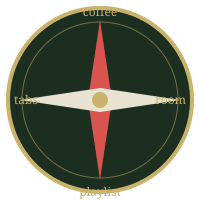

The Side Quest Map
You are here. The main quest is somewhere on this map.
Everything else is a side quest. Scroll in any direction.
↑ ↓ ← →

Side Quest: One More Coffee
Reward: 15 minutes of feeling productive.
Repeatable. Does not count toward the main quest.
Side Quest: Close the 47 Tabs
You will open 12 new ones while doing this.
Difficulty: impossible
Side Quest: Reorganize the Room
It was fine. You know it was fine.
Side Quest: The Perfect Study Playlist
Three hours in, zero songs played, zero pages read.
you went all the way up here. there is nothing up here. go do the assignment.
a reminder from past you: the deadline did not move.
the side quests will still be there tomorrow. they always are.
if you found this one you have scrolled 2600 pixels. that is commitment. imagine that on the main quest.
psst. hover over this sentence (the real side quest is naps) for a surprise.
🥾 A lost hiker. They have been looking for the main quest since 2019.
Tip: tell them it's in the bottom right.
📝 Sticky note: "buy milk, finish the assignment, call grandma"
Two of three are done. Guess which.
a tiny door. it leads to the main quest. sneaky. →
🚪
you found the exact center of the map. nothing here either, but nice aim.
the very last pixel. congratulations, you are thorough.
MAIN QUEST
Submit the assignment due at 11:59.
You scrolled past five side quests to get here, so you already know the trick: the main quest was never hidden. It was just not where you were looking.
Main quest. Now. The side quests will still be there.
↖ back to the start